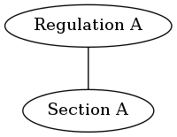

Automapping¶
This is a process that automatically creates mappings based on user created mappings (basically, automappings can be seen as transitivity rules for mappings).
ggrc.automapper¶
This defines the entry point register_automapping_listeners that
registers an event listener that fires on every user-created mapping.
Based on the neighborhood of the two mapped objects it fires the
appropriate rules and creates new mappings. The process is then repeated
for newly created mappings. This effectively traverses the local
relevant subgraph as defined by the rules.
ggrc.automapper.rules¶
This defines rules for mapping creation as data. This approach allows
for automatic sanity checking of the rules which can help prevent
unintended blowups of the auto-mappings. In order to keep automatic
mappings under control we impose a tree structure on the mappings graph
as defined by type_ordering. Then we only allow auto-mappings
between A and C if the ABC path is a minor of the mappings
tree.
Automapping example¶
Automapping rules are defined by a namedtuple Rule(top, mid,
bottom) where top, mid, bottom are sets of types.
For example, we have the following two rules set:
Rule({"Program"}, {"Regulation"}, {"Section", "Objective"})
Rule({"Regulation"}, {"Section"}, {"Objective"})
These rules are “exploded” and transformed into the following tuples (concatenated cross products of sets in each rule):
("Program", "Regulation", "Objective"),
("Program", "Regulation", "Section"),
("Regulation", "Section", "Objective")
Since mappings are non-directional, each tuple is reversed and added to the list:
("Program", "Regulation", "Section"),
("Program", "Regulation", "Objective"),
("Regulation", "Section", "Objective"),
("Section", "Regulation", "Program"),
("Objective", "Regulation", "Program"),
("Objective", "Section", "Regulation")
Each time a mapping between O1 and O2 of types T1 and T2 is created, the app performs the following:
- Find each rule where (T1, T2) is the first two items of the rule; suppose T3 is the third item of the rule.
- For each object of type T3 that is mapped to O2, create a mapping between that object and O1.
- Do the same two steps in the opposite direction (O2, O1).
Each mapping created during this procedure triggers automappings too.
Let’s check a more concrete example.
There is a Regulation mapped to a Section:
The user creates Objective A and maps it to Section A.
- The app searches rules by (“Section”, “Objective”) key and finds none.
- The app searches rules by (“Objective”, “Section”) key and finds
(“Objective”, “Section”, “Regulation”) rule.
- The app finds Regulation A mapped to Section A and maps it to
Objective A.
- The app searches rules by (“Regulation”, “Objective”) key and finds none.
- The app searches rules by (“Objective”, “Regulation”) key and finds
(“Objective”, “Regulation”, “Program”).
- The app finds no Programs mapped to Regulation A.
- The app finds Regulation A mapped to Section A and maps it to
Objective A.
Then the user creates Program A and maps it to Regulation A.
- The app searches rules by (“Program”, “Regulation”) key and finds
(“Program”, “Regulation”, Section”) and (“Program”, “Regulation”,
“Objective”).
- The app finds Section A mapped to Regulation A and maps it to
Program A.
- The app searches rules by (“Section”, “Program”) key and finds none.
- The app searches rules by (“Program”, “Section”) key and finds none.
- The app finds Objective A mapped to Regulation A and maps it to
Program A.
- The app searches rules by (“Objective”, “Program”) key and finds none.
- The app searches rules by (“Program”, “Objective”) key and finds none.
- The app finds Section A mapped to Regulation A and maps it to
Program A.
- The app searches rules by (“Regulation”, “Program”) key and finds none.
Now the user creates Objective B and maps it to Section A.
- The app searches rules by (“Objective”, “Section”) key and finds
(“Objective”, “Section”, “Regulation”).
- The app finds Regulation A mapped to Section A and maps it to
Objective B.
- The app searches rules by (“Regulation”, “Objective”) key and finds none.
- The app searches rules by (“Objective”, “Regulation”) key and
finds (“Objective”, “Regulation”, “Program”).
- The app finds Program A mapped to Regulation A and maps it
to Objective B.
- The app searches rules by (“Program”, “Objective”) key and finds none.
- The app searches rules by (“Objective”, “Program”) key and finds none.
- The app finds Program A mapped to Regulation A and maps it
to Objective B.
- The app finds Regulation A mapped to Section A and maps it to
Objective B.
- The app searches rules by (“Section”, “Objective”) key and finds none.
The process is iterative, and the set of rules can be much more complex.
Implementation details¶
The list of rules is transformed into a dict of rules by code like:
rules = defaultdict(list)
for from, to_, mapping in rules:
rules[(from, to_)].append(mapping)
# {("Program", "Regulation"): ["Section", "Objective"],
# ("Regulation", "Section"): ["Objective"],
# ("Section", "Regulation"): ["Program"],
# ("Objective", "Regulation"): ["Program"],
# ("Objective", "Section"): ["Regulation"]}
The dict makes each check for automapping rules O(1).
To lower the memory footprint, each object is represented with a
minimal namedtuple("Stub", ["type", "id"]), which is hashable and
sortable (can be stored in sets, can be reliable ordered together with
another stub). Each mapping is represented with a tuple
tuple(sorted([src_stub, dst_stub])) internally, which is hashable
as well.
To minimize the number of DB queries, we support a local cache that
stores what objects are mapped to an instance: {src_stub:
{dst_stubs}}. The cache is populated with all objects for which we
search mapped objects, and it is updated each time we perform an
automapping.
To linearize the automappings generation and keep the call stack
shallow, instead of recursive calls to automapping calculation
function we store each new mapping that should be processed to a set
self.queue, and pop this set in a loop. To avoid duplicate
processing for each mapping, we store a set of processed mappings in a
set self.processed.